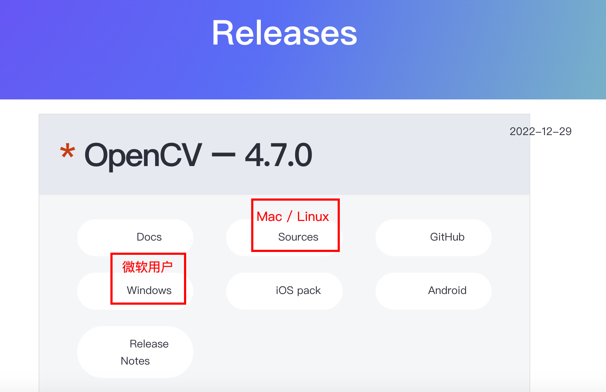
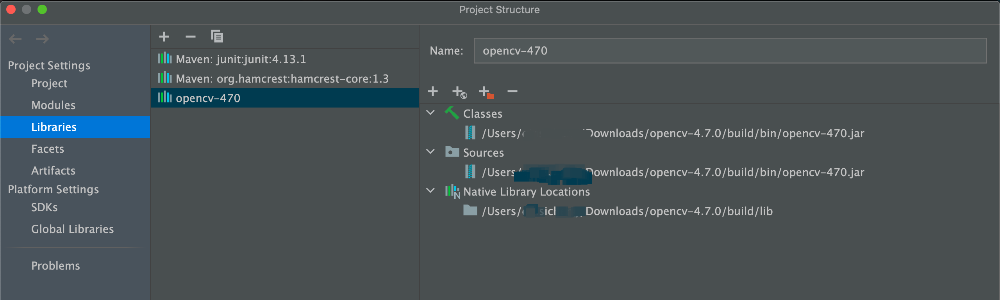

opencv环境搭建
opencv 入门
环境下载与搭建
Windows用户
直接在官网下载 Windows 文件：https://opencv.org/releases/ 。然后参考这篇文章：https://blog.csdn.net/qianlixiaomage/article/details/108416400。说实话Windows上操作太方便了。我用Mac捣鼓了半天，气死。
Mac用户
直接在官网下载 Sources 文件：https://opencv.org/releases/ 。并进行解压。
下载cmake：brew install cmake
下载Ant：https://www.jianshu.com/p/bdca5215e9ca 这里是必须的，如果没有，最后无法生成jar包
cd opencv-4.7.0 # 这里是opencv源码包解压的文件地址
mkdir build
cd build
cmake -D CMAKE_BUILD_TYPE=RELEASE -D CMAKE_INSTALL_PREFIX=/usr/local .. # 这俩点表示OpenCV的源码位置，不能省略 如果最后一句报错，就到上一层目录中找有没有：CMakeCache.txt 这是上一次cmake的缓存，删除即可。
这一步会耗费很长时间，如果中间耗时过久，在这里卡顿：IPPICV: Download: ippicv_2019_lnx_intel64_general_20180723.tgz,可以参考这篇文章：https://www.jianshu.com/p/3c2fc0da7398/
make
sudo make install这里应该在build/bin 文件下出现jar包，如果你没有
参考这篇文章：https://blog.csdn.net/sinat_34163739/article/details/103497452 ，检查你的配置是否都正常。
现在检查你有没有这个文件：opencv-4.7.0/build/lib/libopencv_java470.dylib，如果都没问题，说明你已经能操作opencv了
打开一个Java项目
在Project Structure中Libraries中添加opencv的jar包

然后在opencv下添加：opencv-4.7.0/build/lib/libopencv_java470.dylib
验证是否加载成功：
System.loadLibrary(NATIVE_LIBRARY_NAME);如果正常，就说明没问题了。